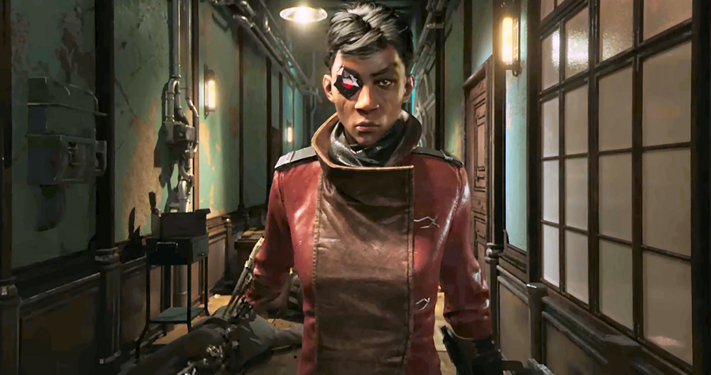

A first standalone spin-off in the award-winning action-adventure stealth video game series Dishonored, ‘Death of the Outsider’ has been produced by the French video game developer Arkane Studios, the same studio responsible for the first entry in the franchise, 2012’s Dishonored as well as its the critically acclaimed 2016’s sequel Dishonored 2.
Death of the Outsider will see Billie Lurk a.k.a. Megan Foster (who was once one of Dunwall’s most notorious professional assassins, then travelled to Karnaca in search of redemption in Dishonored 2) reuniting with her mentor – the legendary assassin Daud – in order to explore the dark underbelly of Karnaca and pull off the ultimate hit assignment: killing the Outsider.
Using all-new powers and abilities, Billie will retrieve ancient artefacts in a thrilling bank-heist mission, infiltrate underground fight clubs and square off against the Sisters of the Oracular Order, the immortal Envisioned and the Outsider-worshiping Eyeless Gang. Alongside these new enemies, she will face also some familiar foes – such as more advanced version of Clockwork Soldiers.
With brutal combat systems, deadly weapons, powerful gadgets and intricately designed levels, Death of the Outsider delivers the ultimate hitman (or, in this case, hitwoman) experience that’s become a hallmark of the Dishonored series. As previously, you will be able pull off your assassinations in whatever way you prefer – whether sneaking in the shadows and quietly killing the unwary target, or using a brute force and savagely dispatching your foes out in the open.
Throughout her journey, Billie will uncover some of the secrets surrounding the Outsider – an enigmatic 4,000-year-old entity which has been responsible for the Empire’s most dishonourable moments. And when she will be finally facing the mysterious, god-like Outsider himself, Billie will be confronted with difficult choices that, for better or worse, will change the world around her forever.

With brand new settings, powers, enemies and more, ‘Death of the Outsider’ can be a good entry point for anyone new to the Dishonored universe, since no prior experience with any previous Dishonored games is necessary to jump in and experience the Empire of the Isles for the first time in this standalone adventure. But the fans of the Dishonored series are in for an even better treat, as the ‘Death of the Outsider’ delivers a significant expansion to the franchise’s lore and gameplay with its ‘Original Game Plus’ (OG+) mode which enables players to unleash game’s full potential by using a selection of signature abilities from Dishonored 2.
Announced by Bethesda at E3 2017, Dishonored: Death of the Outsider will see its release on 15 September 2017, with availability for PC Windows, as well as PlayStation 4 and Xbox One consoles.